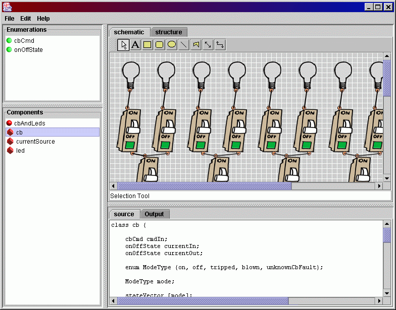
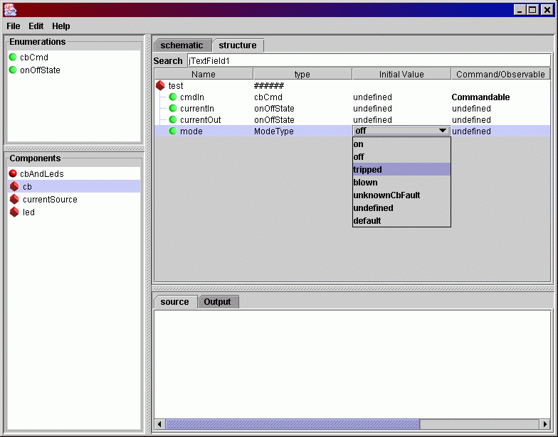
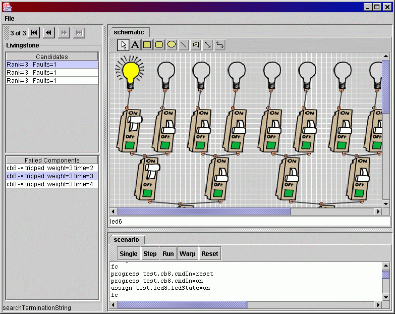

Here are a couple of screen shots of the application.
The Oliver application has two types of frames associated with it.
The main frame is the "Editor" frame, and is used to create and edit the model,
initial state and harness information. The second is the "Debugger" frame
that is launched from the Editor frame when a model is executed. Each Debugger
frame is associated with an instance of the Livingstone engine.
Editor Frame

Harness and Initial State Editor

Debugger Frame

|